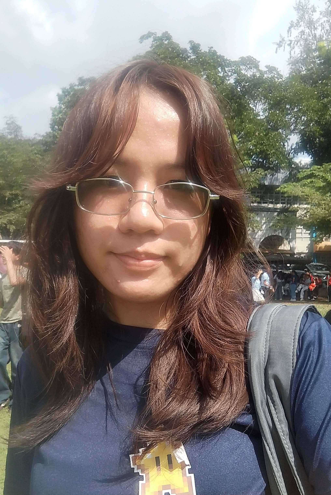

HELLO! I am Pinky!

Hello! My name is Pinky Mae D. Salgarino and I am a first-year BS Computer Science student at Bicol University. One word to describe me is that I am an introvert and a quiet person. I like to spend my time alone, but not always.
About me
My hobbies are playing games, watching movies, and sometimes reading.
GAMES
- I love playing video games like Call of Duty, offline games like Cooking Tycoon, and board games like One night werewolf, cards, and many more.
MOVIES
- When I have plenty of time, I often watch comedy and dramatic movies. Some movies that I've watched are Three Idiots, The Croods, Madagascar, Minions, The Lovely Bones, Marrowbone, and many more.
READING
- I like reading manhwas, mangas, and sometimes even manhuas. My favorite out of all is reading manhwas because I like genres such as actions and historical manhwas.
My path into computing
Favorites
These are my favorite apps which I always use.
Goals
My Class Schedule
| Subject | Day | Time |
|---|---|---|
| CS 101: Introduction to Computing | Wednesday | 9:00 am - 12:00 pm |
| CS 102: Computer Programming | Monday and Wednesday | 4:00 pm - 7: 00 pm |
| PHYS 101: Physics for Computing | Tuesday and Thursday | 1:00 pm - 2:30 pm |
| MATH 101: Mathematical Analysis | Tuesday, Thursday, and Friday | 2:30 pm - 4:00 pm (TTh) and 1:00 pm - 3:00 pm |
| GEC 11: Understanding the Self | Friday | 8:00 am - 11:00 am |
| PATHFit 1: Movement Competency Training | Saturday | 4:00 pm - 6:00 pm |
| NSTP 11: CWTS | Saturday | 7:00 am - 10:00 am |